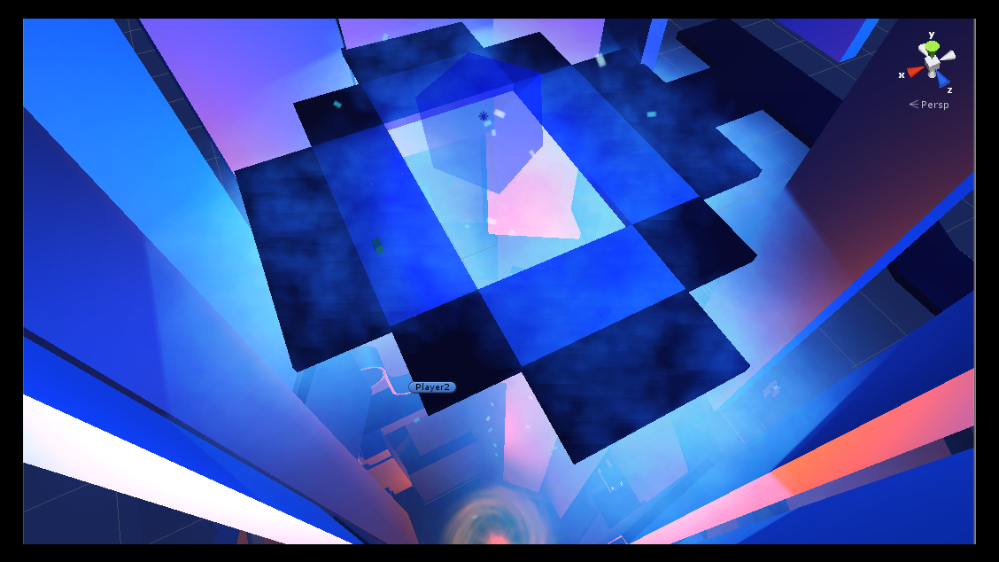
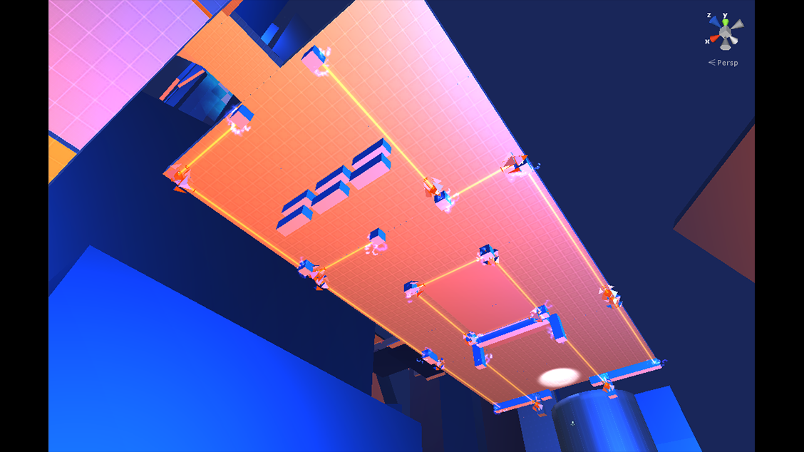
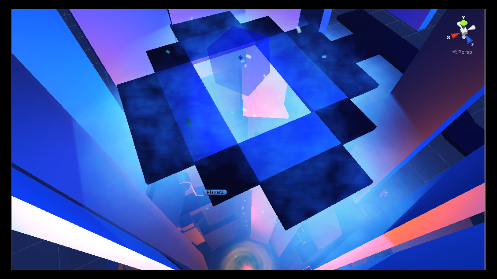
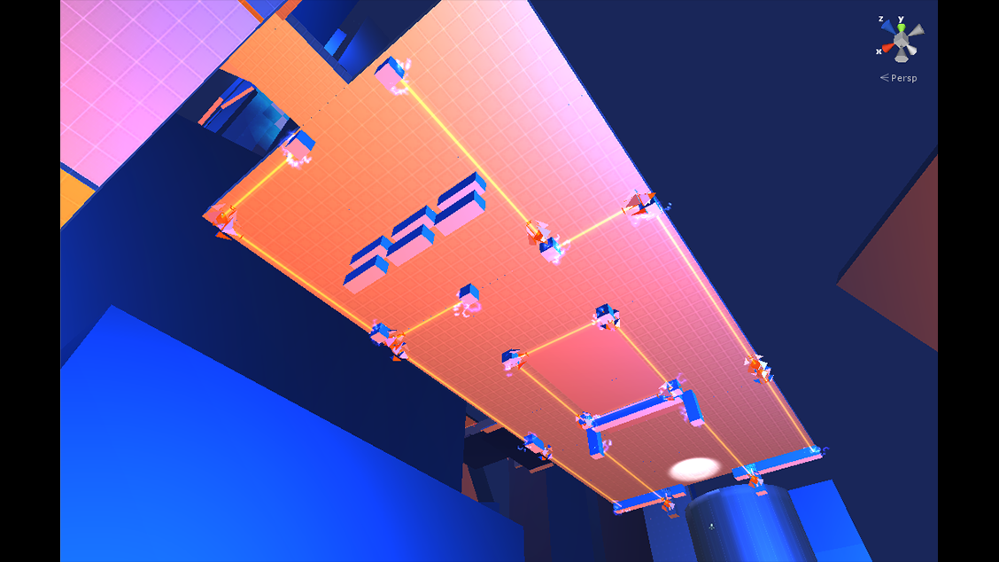

Frilled the Skilled
When: 3rd Semester at School4Games
Position: Level Design, Game Design, Art
Meet Frilled, the frilled-lizard,
who is part of the origin of the world and this is where he is seeing creatures of the australian mythology.
But also the origins contains some danger that needs to avoided.
PLAY IT!
 


